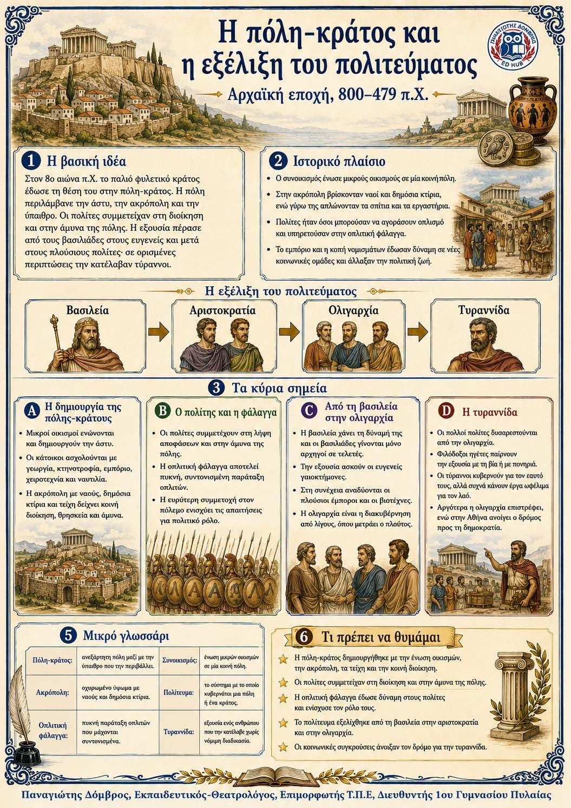

Πληροφοριογράφημα ενότητας
Το πληροφοριογράφημα αυτής της ενότητας δεν έχει ανέβει ακόμη. Οι σημειώσεις παραμένουν πλήρως διαθέσιμες.

Κεφάλαιο 4 · Αρχαϊκή εποχή, 800–479 π.Χ.
Τον 8ο αιώνα π.Χ. το παλιό φυλετικό κράτος έδωσε τη θέση του στην πόλη-κράτος. Η πόλη περιλάμβανε το άστυ, την ακρόπολη και την ύπαιθρο. Οι πολίτες ένιωθαν μέλη μιας κοινότητας, συμμετείχαν στη διακυβέρνηση και υπερασπίζονταν μαζί την πόλη τους. Μαζί με την πόλη άλλαζε και το πολίτευμα, δηλαδή ο τρόπος διακυβέρνησης. Η εξουσία πέρασε από τους βασιλείς στους ευγενείς, έπειτα στους πλούσιους και σε ορισμένες περιπτώσεις στους τυράννους.
